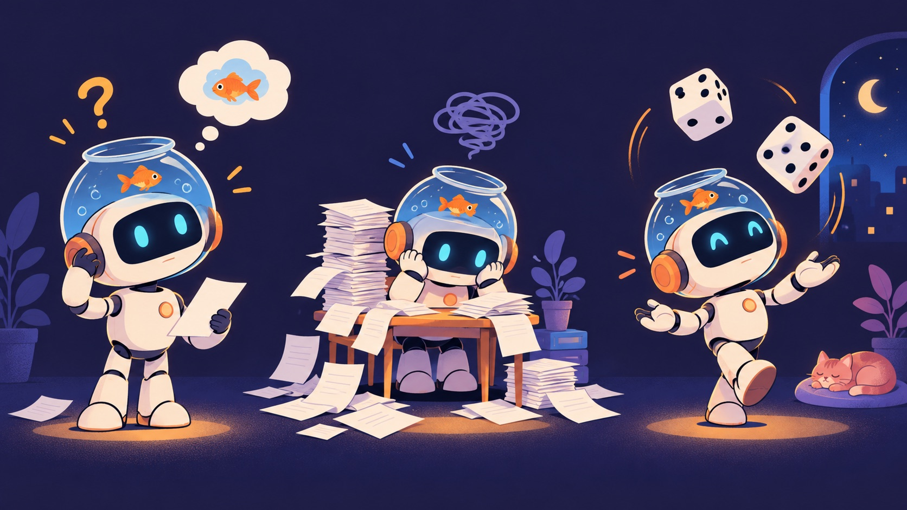
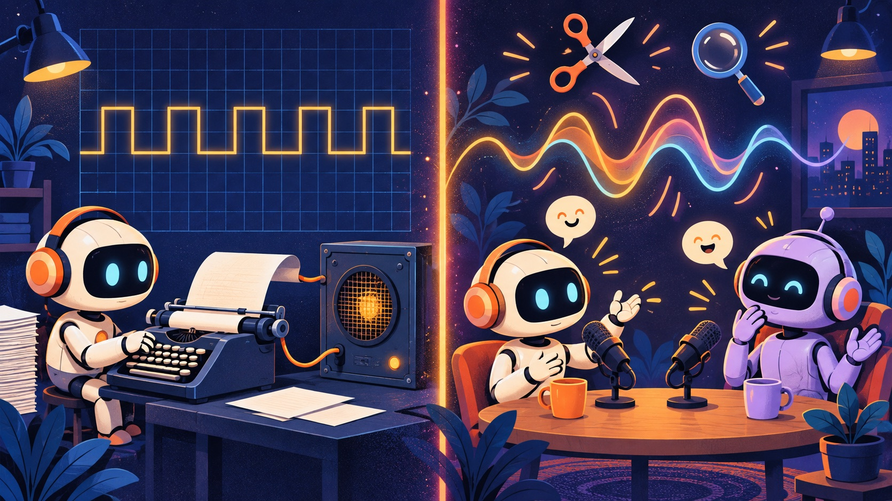
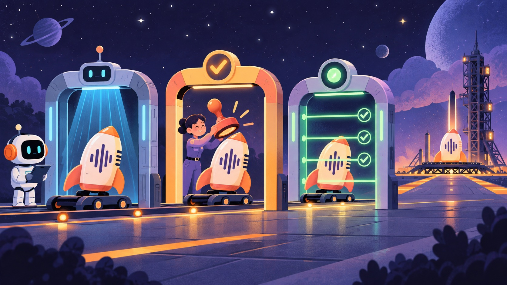

KidSciCast AI · 大學部專題演講
一鍵生成？
《科學好好聽》背後的 AI 工程
一集兒童科普 Podcast 是怎麼煮出來的：從 Prompt 到 Graph 的五環工程
Yukai Huang · 製作人／系統設計
很多人以為
AI Podcast
＝打一句話、按一個鍵
又快、又簡單、又廉價。
一集《科學好好聽》實際要走過的路：
按下生成鍵，只是其中一格。
發生了什麼事
素材是對的，黑盒子說出來的不對
我們給 NotebookLM 的素材
水庫裡儲存的是液態的水
NotebookLM 說出來的
水庫不是應該裝滿了液態的屎嗎？
NotebookLM 不是照稿念的 TTS，對話是它自己生成的，
我們沒辦法指定它說的每一個字。要變成能給孩子聽的節目，需要一整套工程。
今天的主張
一鍵生成的是音檔，
工程做出來的才是節目
今天帶大家潛到水面下，一層一層看：
▸ 五環理論：用來定位問題的放大鏡
▸ 一集節目的生產線，以及為什麼選 NotebookLM
▸ AI 與人耳的雙層防線、修音
▸ 契約、狀態機、會過期的審查、發布關卡
▸ 成本與聽眾回饋
第一幕 · 為什麼要做這件事
教室裡，老師愈來愈難找
· 代理教師開學後仍一再招不滿
· 校園環境壓力影響教師的留任意願
· 電子、半導體業對理工人才的吸力
需要便宜、可審核、可重複使用的科學教材
AI 是幫老師，不是取代老師。
第一幕 · 為什麼要做這件事
繁體中文不只是換一個語言標籤
直接套用英文或簡中的 AI 流程，會多出四種工作
字形
发 → 發？髮？
簡轉繁是一對多，「頭发」要變「頭髮」，不是「頭發」
用語
激光 → 雷射
軟件 → 軟體
科學名詞要用臺灣課本的說法
讀音
企業 qì
垃圾 lè sè
臺灣華語和大陸普通話的讀音不同，合成語音常常念錯
兒童理解
寫的 ≠ 聽的
書面說明要改成小朋友聽得懂的對話，而且只能用耳朵聽
第一幕 · 節目規模
2025 年 5 月上線，到 2026 年 9 月
120萬+
次播放
SoundOn ＋ Firstory 後台合計
≤ $30
美元／月工具費
審核約 15–20 分鐘／集
第二幕 · 五環理論速成
AI 是一位天才實習生，但有三個毛病

🐟 金魚記憶 Stateless
每次呼叫都忘光，要記得的東西得每次重新給它
🗂 桌子很小 Bounded
一次能看的內容有限，放什麼上桌是個選擇
🎲 愛擲骰子 Stochastic
同樣的問題，每次答案可能不一樣
第二幕 · 五環理論速成
五環：內圈是外圈的零件
| 環 | 白話 | 工作單位 |
|---|
| ① Prompt | 怎麼說 | 一次輸入 |
| ② Context | 給他看什麼 | 視窗裡放什麼 |
| ③ Harness | 工作台＋驗收 | 一台機器 |
| ④ Loop | 重來的規則 | 一次執行 |
| ⑤ Graph | 團隊分工 | 一整個流程 |
第二幕 · 五環的定義，用《科學好好聽》當例子
每一環在設計什麼？
套疊：Prompt ⊂ Context ⊂ Harness ⊂ Loop ⊂ Graph，內圈是外圈的零件
| 環 | 定義 | 在《科學好好聽》裡 |
|---|
| ① Prompt | 設計一次輸入怎麼寫：角色、指示、範例、格式 | 請 episode_md 扮演科普作家，把素材寫成小學生聽得懂的文章 |
| ② Context | 決定 AI 每次桌上放什麼：挑選、壓縮、丟掉、隔離 | 給 NotebookLM 的素材只放查核過的文章、主持人設定、發音標注 |
| ③ Harness | 把模型包成會用工具、會驗收的機器 | fact_check 讓 Claude 上網查證 Gemini 寫的文章，疑點寫進 suspect.md |
| ④ Loop | 讓機器重複做到對，而且知道什麼時候該停 | 聽到錯字 → 定位 → 替換 → 再聽；修太多處就改成整集重生 |
| ⑤ Graph | 把很多機器排成有分工、有關卡的流程圖 | 人耳審核通過，才平行產生測驗、詞彙、知識卡，最後檢查 17 項素材 |
第二幕 · 套在一起之後，自然推出三件事
五環的三條推論
C1
外圈修不好內圈的錯
換一個更大的鍋子，救不了壞掉的食材。往外加一環是多了控制點，不是修好了裡面。
C2
錯誤往外傳，而且放大
一個念錯的字，會被抄進 30 題測驗、5 個詞彙卡、短影片字幕。外圈每多一層，就多複製一次。
C3
每一環要用自己的尺
一句話寫得好，不代表整集合格；整集合格，不代表能追查是誰批准的。
🔬 DEEP DIVE
系統全景 · 製作人提供的五層架構
五層架構 × 五環：兩把不同的尺
五層是部署上的責任分工；五環是被設計的工程對象
| 部署層（誰負責什麼） | 主要元件 | ①
Prompt | ②
Context | ③
Harness | ④
Loop | ⑤
Graph |
|---|
| L5 儲存與交付 | 目錄、17 項素材、平台 | | | ● | | ● |
| L4 驗證與人工閘門 | 查核、完整性檢查、修音、人耳 | | | ● | ● | ● |
| L3 Skill 與 DAG 編排 | 40+ skill、flow.md | ● | ● | ● | | ● |
| L2 異質模型與處理引擎 | Gemini、Claude、NotebookLM… | 五環的中心：被包起來的模型本身 |
| L1 代理執行環境 | Antigravity、規則檔 | | | ● | | |
第三幕 · 一集節目怎麼做
《科學好好聽》的主線：六個步驟
1① ②
/episode_md主題＋素材 → 給孩子的原始科學文章
2③
/episode_fact_check換另一家模型＋網路檢索檢查正確性，疑點寫進 suspect.md
3②
/episode_pronounce找出容易念錯的詞，把羅馬拼音標回原稿
4① ②
/episode_preview產生給 NotebookLM 的 prompt：主持人設定＋調整過的素材
5黑盒
NotebookLM生成兩位主持人的自然對話音檔
6④ ⑤
人耳＋音訊剪接AI 轉錄檢查＋人工聆聽，發現錯誤就修音，通過才做教材
RING 1 · PROMPT
怎麼說
工作單位：一次輸入
角色、指示、範例、格式，四個欄位決定一次呼叫的品質
① Prompt · 在《科學好好聽》裡
每一集都從幾份「說話規格」開始
episode_md文章規格
題目和來源 → 一篇給孩子的科學說明文
preview.txt主持人設定
科學隊長負責發問、比喻；浩奇博士負責解釋原理
episode_pronounce發音提示
標註多音字、專有名詞該怎麼念
規範 格式要用程式強制檢查，不能只靠「拜託 AI 照做」
極限 發音提示只是給 NotebookLM 的「建議」，有些錯念，改 prompt 也改不掉
RING 2 · CONTEXT
給他看什麼
工作單位：視窗裡放什麼
桌子就那麼大，選、壓縮、丟掉、隔離，都是設計
② Context · /episode_pronounce
把「容易念錯」寫回原稿，餵給下一步
標注後的原稿（示意）
地殼(qiào)底下的岩漿，會釋放甲烷(jiǎ wán)嗎？
規則
· 30 多個破音字規則：差、還、長、行、重、數……
· 強制標注清單：角色 jué sè、海獺 tà、分泌 mì、魚鰾 biào
· 常見讀音不標，避免念得卡卡的
這是把發音知識放進 AI 的「桌上」，但它只是提示，不保證 NotebookLM 一定照念。
RING 3 · HARNESS
工作台＋驗收
工作單位：一台機器
組裝輸入 → 動手（工具、子代理） → 驗收。少了驗收，只是把 AI 包一層外殼
③ Harness · 40 多個 skill 組成的工作台
一集節目的生產線
寫稿用 Gemini，查核換成 Claude ＋網路檢索：不讓寫的人自己改自己的考卷
查核只負責標出疑點，要不要改、怎麼改，由製作人決定
🔬 DEEP DIVE
③ Harness · Skill 元素週期表
每個 skill 只做一件事，有清楚的輸入與輸出
一個 skill 的契約（示意）
---
name: episode_glossary
input: transcript.json, {id}.md
output: glossary.json # 5 個詞
rules:
- 用孩子聽得懂的比喻
- 已存在且完整 → 跳過
- 格式損毀 → 增量修補
---
skill-rule.md：只准呼叫原子 skill，禁止未驗證的批次黑盒腳本
episode-rule.md：找不到正式目錄就退回草稿目錄
列出 32 個代表性 skill，全部共 40 多個
③ Harness · 驗收的規範
球員不能兼裁判
自己檢查自己
「我查過了，沒問題。」
同一個模型、同一份資料，盲點也一樣。自我評估很容易高估自己。
外部驗收
換模型、換證據、換人
驗收要有獨立於生成的依據：網路來源、另一個模型、人耳。重試時要重新收集資訊，不是原地再擲一次骰子。
第三幕 · 一個關鍵的設計決策
為什麼不自己寫逐字稿再 TTS？

| A 逐字稿＋TTS | B NotebookLM |
|---|
| 自然度 | 念稿感 | 附和、搶話、停頓，孩子聽了停不下來 |
| 控制 | 每個字都可控 | 黑盒，每次結果不同 |
| 出錯時 | 改字、重念一句 | 只能事後剪音訊 |
我們用控制權換到了自然度，所以要在外圈補上修音和把關。
🔬 DEEP DIVE
NotebookLM 的自然感從哪裡來 · 依 Google DeepMind 公開說明
對話的「人味」是語音模型自己長出來的
SoundStream
神經音訊編解碼器：把聲音壓成 token
AudioLM
像語言模型一樣，逐個預測聲音 token
新對話模型
2 分鐘雙人對話，驅動 Audio Overviews
<3 s
單顆 TPU v5e 生成 2 分鐘對話（快 40 倍以上）
「嗯」「真的嗎」、停頓、換氣，都不在腳本文字裡，是語音模型自己產生的。
來源：DeepMind〈Pushing the frontiers of audio generation〉(2024/10)、NotebookLM 團隊訪談。Audio Overviews 自 2025/4/29 支援繁體中文。
選擇的代價
自然感來自語音模型，
錯誤也來自語音模型
素材準備得再好，NotebookLM 還是可能：
· 把水念成屎 字詞錯
· 說出稿子裡沒有的內容 自由發揮
第一環管不到 → 控制只能放在 ④ 修音 和 ⑤ 人工閘門
兩種錯，兩種抓法
字都對，語氣錯了，只有人耳抓得到
| 〈水庫〉 | 〈孟加拉灣〉 |
|---|
| 錯誤類型 | 字詞錯：一個字改掉了意思 | 語氣錯：每個字都對，情緒不對 |
| 逐字稿查得到嗎 | 看 context 怎麼給，可能被「修」掉 | 查不到，笑聲根本不會進逐字稿 |
| 怎麼修 | 定位那個字，替換音訊 | 把笑聲剪掉 |
| 屬於哪一環 | ④ Loop | ⑤ 人工核准節點 |
兒童節目的驗收，必須包含實際播出的聲音，不能只看文字。
第四幕 · 抓錯是 hybrid 的
雙層防線：AI 和人耳，互相補對方的洞
AI 擋得住
對照文章找出說錯的數字、名詞、漏掉的關鍵句，人用耳朵聽很容易滑過去
小實驗 · AI 那一層防線的洞
AI 會聽見它預期聽到的東西
提示 A · 只說「這是兒童科普節目」
……裝滿了液態的屎嗎？
錯誤被抓到了 ✅
提示 B · 給它「預期」的那句話當參考
……裝滿了液態的水嗎？
錯誤被「修」掉了，逐字稿看起來完美無缺 ❌
同一段音檔、同一個 Whisper large-v3，只差在提示
RING 4 · LOOP
重來的規則
工作單位：一次執行
什麼時候再試一次？什麼時候必須停？
④ Loop · 修音迴圈
從手工剪接，到 harness 定位替換
以前
人工在剪輯軟體裡找到那一個字、剪掉、重錄、對齊，很慢
現在
harness 定位特定詞語，生成替換音、插回原檔，最後仍由人聽過才算數
不能全域把「屎」換掉：講消化系統那一集本來就會用到這個字。修的單位是「這句話裡、這個位置的這段聲音」。
④ Loop · 規範
四個煞車，任何一個踩下去就停
迴圈有幫助的前提：每一輪都拿到新的、可靠的回饋。沒有新資訊，重來只是在燒錢。
④ Loop · 修音分級
依嚴重度決定怎麼修
| 等級 | 例子 | 處理 | 狀態 |
|---|
| S1 | 讀音錯、意思沒變
地殼念成 ké | 替換那個詞；音色接不上就剪整句 | 現行 |
| S2 | 意思改變或不雅
水 → 屎 | 修好才能發布。剪整句 → 替換詞 → 重念整句 → 重生該段 | 現行
順序為建議 |
| S3 | 語氣不當
悲劇段落裡笑出來 | 剪掉笑聲；和說話重疊就剪整句 | 現行 |
| S4 | 聲音裡說錯科學
素材對，主持人自由發揮說錯 | 剪掉或替換；錯誤遍布就修正 prompt 後整集重生 | 建議 |
🔬 DEEP DIVE
④ Loop · 停止條件的實務版
修補，還是整集重新生成？
重生的成本
重新生成 ＋ 整集重審 15–20 分鐘 ＋ 重新擲骰子：可能冒出新的錯
建議規則：同一集修補超過 N 處，或累計超過 X 分鐘 → 改為整集重生
修改之後，這些東西會「過期」，要重新檢查：
逐字稿時間戳說話者標籤測驗題的根據詞彙解釋短影片字幕重點時間點
重生不保證比較好：同樣的 prompt，每次結果不同。
RING 5 · GRAPH
團隊分工
工作單位：一整個流程
節點、路線、共享狀態。人類核准也是圖上的一個節點
⑤ Graph · 一集節目的流程圖
先過人耳，才開始做教材
🔬 DEEP DIVE
⑤ Graph · 依架構文件重繪的完整 DAG
關鍵路徑、扇出、扇入、故障隔離
故障隔離：視覺分支因配額失敗，不阻擋音訊與題庫。注意 check_all 只檢查「存在且非空」，不代表內容正確。
🔬 DEEP DIVE
契約 · 每個產物都是一個有狀態的物件
程式跑完 ≠ 內容被接受
驗證結果另外記
pass fail indeterminate
附證據與範圍；「不確定」不能被當成通過
| 產物 | 機械檢查 | 語意驗收 |
|---|
| 逐字稿 | 格式、時間戳範圍 | 和聲音一致 |
| 測驗題 | 題數、答案鍵 | 有根據、不模稜兩可 |
| 音檔 | 可解碼、長度 | 讀音、語氣、聽得懂 |
第四幕 · 這是正規工程，不是玩具
審查是會過期的
就像便當上的有效期限貼紙：內容一改，舊的「已審核」就失效。
每一筆審查紀錄都綁定：
內容雜湊哪一集哪一版政策上游所有版本
v10 修正前，原型曾讓過期的審查繼續生效；這個漏洞已修補。
🔬 DEEP DIVE
離線原型 schema-v2 · 審查綁定的對象
每筆審查都簽在一個遞迴雜湊上
Ready(e) = ⋀ Accepted(a)
∧ Consistent(e)
∧ Approved(e)
validate(m, require_approval=False)
預檢：不能當發布授權
validate(m)
正式：核准必須對上整份目前的清單
威脅模型：digest 不是簽章。能改寫所有紀錄的人，就能偽造「新鮮的」審查。
第四幕 · 發布規範
發布前要過三道關

1 · Preflight
機器先檢查：素材齊不齊、審查有沒有過期、依賴對不對
2 · 人工批准
人批准的是這一份確切的清單，不是「大概這樣」
3 · 最終驗證
批准之後再檢查一次，確認期間沒有東西被改過
第四幕 · 一集要花多少錢
「便宜」是錯覺：人的時間才是大頭
C = S/N + w·(h + b + p·r)/60 + U
工具費 $1.50
審核 20 分鐘
修音工時
假設：S=$30/月、N=20 集、w=$20/時、b=U=0
第五幕 · 聽眾怎麼說
4.3／5
Apple Podcasts 臺灣，538 則評分
最近 50 則評論在說什麼
例：家長說兩個孩子每天上學路上聽；孩子在課堂上答出節目裡聽過的知識；聽了兩個月的家庭來點題「細胞」。
回到這座冰山
水面下，我們今天看到了：
40+ 個 skill
30+ 條破音字規則
2 家模型交叉查核
1 個修音迴圈
1 道人耳閘門
17 項素材檢查
3 道發布關卡
15–20 分鐘人工審核
一鍵生成的是音檔，
工程做出來的才是節目。
帶走三句話
1. AI 沒有讓人消失，人負責最貴的那個判斷
2. 先找出錯在哪一環，再決定要不要往外加一層
3. 整個系統的品質上限，取決於驗收做得多好
Q & A
下一集，你想聽什麼？
也歡迎問：五環、修音、繁中語音、或是怎麼把 AI 專案做得「正規」
《科學好好聽》· Apple Podcasts / Spotify